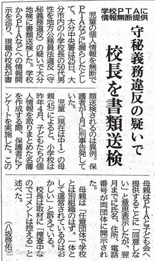

教育委員会・学校管理職向けガイド
教育委員会が確認すべき対象は、PTAの内部運営そのものではありません。学校がPTAのために行っている配布、回収、会費徴収、名簿利用、教職員関与、学校施設・学校連絡ツール利用です。
PTAは任意団体であり、社会教育関係団体としての自主性があります。その一方で、学校の文書、学校の名簿、学校徴収金、学校連絡アプリ、教職員の勤務時間、学校施設がPTA事務に使われている場合、それは学校管理上の確認事項になります。ここを切り分けることで、「PTAは任意団体なので教育委員会は関係ない」という整理では済まなくなります。
最初に確認する学校関与
各学校に対して、まず次の事実を確認します。法令名を並べる前に、学校が何をしたのかを文書と運用で押さえることが重要です。
| 確認領域 | 学校側で確認する事実 |
|---|---|
| 入会意思確認 | PTA入会申込書の有無、未提出者の扱い、退会・非加入の説明、入学手続との混同の有無。 |
| 会費徴収 | 学校徴収金とPTA会費を同じ口座・同じ文書・同じ時期で処理していないか。未納督促や返金処理を誰が行うか。 |
| 個人情報 | 学校保有の児童・保護者情報をPTAへ提供していないか。提供している場合、利用目的、同意、提供項目、記録があるか。 |
| 教職員関与 | 担任、教頭、事務職員が勤務時間中にPTA文書の配布・回収・集計・会計・名簿処理を行っていないか。 |
| 学校媒体・施設 | 学校ホームページ、学校連絡アプリ、学校メール、校内印刷機、PTA室、会議室の利用基準と許可記録があるか。 |
| 寄附・物品提供 | PTA会費で購入した物品や寄附が、未加入児童を含む全児童に公平に扱われているか。寄附採納手続の有無。 |
各学校に提出を求める資料
抽象的な聞き取りだけでは、学校とPTAの境界は確認できません。各学校から、実際に配布・回収・保存・利用している文書を提出させる必要があります。
| 資料 | 確認する理由 |
|---|---|
| PTA入会案内・入会申込書 | 任意加入であること、入会意思確認があること、会費額・退会方法が説明されていることを確認する。 |
| 退会届・非加入届・未加入家庭向け説明 | 加入しない家庭や退会する家庭への扱いを確認する。 |
| 学校徴収金案内・口座振替依頼書 | 教材費等とPTA会費が抱き合わせで案内・徴収されていないかを確認する。 |
| 個人情報同意書・名簿提供記録 | 学校からPTAへの提供なのか、PTAが本人から直接取得しているのかを分ける。 |
| 学校連絡ツールの配信記録 | 学校公式連絡網をPTA通知・勧誘・督促に使っていないかを確認する。 |
| 職専免・兼職兼業・校務分掌資料 | 教職員がPTA事務を勤務時間内に行う根拠が整理されているかを確認する。 |
| 施設使用許可・印刷機・PTA室の利用記録 | 学校施設の利用が、学校教育上の支障や公平性の観点から整理されているかを確認する。 |
不存在は「問題なし」ではない
PTA問題では、文書が存在しないこと自体が、手続の欠落を示すことがあります。不開示・不存在をもって調査終了にせず、なぜ存在しないのか、実際の運用はどうだったのかを確認します。
| 不存在だった文書 | 追加確認すべきこと |
|---|---|
| 入会申込書 | 入会意思確認をしないまま会員扱い・会費請求をしていなかったか。 |
| 徴収委任・口座振替根拠 | 学校がPTA会費の徴収・督促・返金に関与した根拠を確認できるか。 |
| 個人情報提供記録 | 提供していないのか、記録せずに提供していたのかを分けて確認する。 |
| 職専免・兼職記録 | 勤務時間中のPTA事務が、服務上どのように整理されていたか。 |
教育委員会が取るべき対応
- 全校調査：入会、会費、個人情報、教職員関与、施設・媒体利用の実物資料を集める。
- 緊急停止：本人同意の確認できない名簿提供、学校によるPTA会費督促、担任回収、学校連絡ツールでの勧誘・督促などを優先的に止める。
- 通知発出：PTA内部を統制する通知ではなく、学校がPTA事務を代行しないための通知として出す。
- 次年度移行：PTA側が入会申込、会員名簿、会費徴収、問い合わせ窓口を自前で整備できるよう、学校側の代行を段階的に分離する。
危機感を持つべき事例
学校保有の児童・保護者情報をPTAへ提供する運用は、服務・守秘義務・個人情報保護の問題として扱われ得ます。下の事例は、有罪確定を意味するものではありませんが、学校管理者が「PTAのことだから学校は関係ない」と整理できないことを示す参考資料です。

校長・教頭・事務職員が確認すべきなのは、PTA活動の良し悪しではなく、学校が保有する情報、学校の職員、学校の連絡網、学校施設をPTA事務に使わせる根拠があるかどうかです。
詳細実務指針
通知モデル、調査票、根拠資料、教育委員会回答文例は、教育委員会向け実務指針ページにまとめています。本ページで学校関与部分を確認したうえで、実務指針を通知・調査票作成に使います。
教育委員会・学校管理職向けガイドブック全文
このガイドブックは、教育委員会・学校管理職向けに、公立学校におけるPTA運営の適正化を図るために必要な確認事項・整理事項を整理したものです。
PTAは、学校とは別の任意加入の民間団体（社会教育関係団体）です。この単純な事実が、全国の学校現場で長年にわたって無視されてきました。その結果として生じている学校とPTAの癒着こそが、今日のPTA問題のすべての根源です。
問題の解決は複雑ではありません。基本に立ち戻り、学校とPTAをきちんと切り分ける──それだけです。今求められているのは、間違った運営をどう法的に追認するかという脱法的発想ではなく、法令が最初から示していた本来の姿に戻ることです。そして、このまま放置することは、教育委員会・学校・PTA役員のいずれにとっても深刻な訴訟リスクを意味します。
第1章 PTAとは何か──社会教育関係団体であり、学校補助団体では断じてない
1-1 PTAの法的性格
PTAは、保護者と教職員が自発的に参加する任意加入の民間団体です。法人格を持たない任意団体として設立・運営されることが多く、法的には民法上の権利能力なき社団として扱われます。
PTA加入は契約行為です。保護者本人が内容を理解したうえで申し込みの意思表示を行い、PTAがこれを承諾することで成立します。この契約には消費者契約法が適用されることが消費者庁の公式見解として確立しています。入会申込記録のないPTAは、契約の存在を証明できず、会費請求・名簿・議決・役員選出のすべての根拠が失われます。
1-2 社会教育関係団体であることの意味
PTAは、社会教育法第10条に定める社会教育関係団体です。「公の支配に属しない団体」──これが社会教育関係団体の本質です。PTAは国や地方公共団体の支配下にない。行政の指揮命令に服さない。つまり、教育委員会や学校はPTAを管理・指揮する立場にないのです。社会教育法第12条は「不当に統制的支配を及ぼし、又はその事業に干渉を加えてはならない」と明確に禁じています。
1-3 PTAは学校補助団体ではない
全国の現場では、PTAが「学校の補助機関」のように位置づけられてきました。しかし、これは法的根拠のない誤った認識です。PTAは学校の校務分掌にも学校教育法にも構成要素として規定されていません。文部科学省もPTAについて「子供の健やかな育成のため、自ら組織し、学び、活動する団体」と明記しています。
1-4 学校・PTA癒着の現状と社会問題化
今日のPTA問題の根源は、学校とPTAの癒着にあります。慣行は法律を上書きしません。全国で確認されている実態：入学時の配布物に学校手続書類とPTA入会申込書が一括封入、PTA会費が学校口座で管理・教材費と同一口座振替、学校アプリを通じてPTA役員募集・行事案内が全保護者に配信、学校事務職員・教頭がPTA会計処理・名簿管理を勤務時間中に実施、PTA入会申込書が存在せず全保護者が自動的に会員扱い、校長・教頭がPTA「副会長」「会計」として会則上に組み込まれているなど。
1-5 文部科学省が示す「学校が関与できる限界」──業務の3分類
文部科学省「業務の3分類」（中央教育審議会答申・平成31年1月）において、「学校徴収金の徴収・管理」でさえ「学校以外が担うべき業務」とされています。地域ボランティア（PTAを含む）との「連絡調整」もまた「学校以外が担うべき業務」です。学校がPTAに関与できるのは連絡調整まで──これが国の示した境界線です。PTA会費の管理・PTA事務の代行はその限界を大幅に超えています。
第2章 PTA加入は「消費者契約」である──消費者契約法が適用される
2-1 PTAは消費者契約法上の「事業者」にあたる
PTA加入は、会費の支払い義務・役員就任義務・活動参加義務等を伴う法的な契約行為です。消費者契約法第2条第2項は「事業者」について「法人その他の団体」と定めており、消費者庁の逐条解説は「その他の団体」の例として明示的に「PTA」を挙げています。PTAが「営利団体ではない」「ボランティアだ」「法人格はない」と説明しても、消費者契約法の適用は免れません。
2-2 自動加入・強制加入は消費者契約法違反
入学手続と一体化した案内で「全員加入」が前提であるかのように扱い、任意加入であることを説明しない行為は、消費者契約法上取り消しうる意思表示を引き出す行為です。また、加入しなければ学校行事や情報提供から排除される状況を作り出すことは、消費者を「困惑させた」うえでの契約にあたる可能性があります。
2-3 訴訟リスクと会費返還請求
全国では、会費返還請求訴訟が実際に起きています。入会申込記録がない状態で徴収された会費は、不当利得（民法第703条）として返還請求の対象になりえます。これらの訴訟リスクはPTAだけでなく、学校・教育委員会にも波及する可能性があります。学校がPTA加入を学校手続と一体化させ、PTA会費を学校口座で管理し、学校アプリでPTA通知を配信した場合、学校・教育委員会も問題状態の形成に関与したと評価される可能性があるからです。
第3章 個人情報保護法第69条──学校からPTAへの情報提供という根本問題
3-1 第69条の構造──原則禁止と例外
公立学校は行政機関であり、保有する個人情報については個人情報保護法の「行政機関等」に関する規定が適用されます。同法第69条は、目的外利用・提供を原則として禁止しています。学校が就学手続で取得した保護者・児童生徒の個人情報をPTAに提供することは、取得目的の範囲外の第三者提供です。
3-2 「本人の同意」という例外は、現場では機能しない
「同意があれば提供できる」という理解は半分しか正しくありません。同意しない保護者の情報は提供できず、同意しない保護者が一人でもいれば、その人の情報はPTA名簿から除外しなければなりません。「全員同意」を前提にした一括提供は制度上ありえません。また、PTA加入が学校手続と一体化している状況下での同意は、自由な意思による同意とはいえません。
3-3 PTAが会員自身から情報を取得すべき理由
個人情報保護委員会のPTA向けFAQも明確に述べています：「PTAが名簿を作成しようとする場合、本人にその利用目的を通知・公表し、本人から取得した個人情報をその利用目的の範囲内で利用することが可能です。」PTAがものごとを完結させなければならない──PTA加入の勧誘・入会申込の受付・個人情報の取得・会費の徴収・会計の管理・名簿の作成・退会の受付、これらすべてをPTAが自ら行い、学校はその一切に関与しない。これが法令が示す正しい姿です。
3-4 学校連絡ツールの使用も認められない
学校アプリによるPTA通知配信は三つの問題を生じさせます。①収集した連絡先情報をPTA配信に使うことは個人情報の目的外利用、②学校公式連絡とPTA通知が混在して保護者が誤認する構造が生まれる、③PTA非加入者にもPTA通知が届き任意加入が形骸化する。学校のシステムを間借りすることは認められません。
3-5 個人情報保護委員会の最新見解
個人情報保護委員会は令和8年3月、「公立学校とPTAの間で個人情報のやり取りをするためのポイント」を公表しました。この資料が公表されたこと自体、国が「学校とPTA間の個人情報のやり取りは現状問題がある」と認識していることの証左です。教育委員会はこの資料を精読し、管下学校の実態を確認する必要があります。
第4章 学校教育法第137条──学校施設利用の根拠と要件、そしてその逆説
学校教育法第137条は「学校教育上支障のない限り、学校の施設を社会教育その他公共のために利用させることができる」と定めています。この条文には二つの独立した要件があります。①学校教育上支障のない限り、②社会教育その他公共のために──の両方を満たした場合にのみ学校施設の利用が認められます。
「学校教育上の支障」は物理的な障害だけを指しません。子どもの精神的成長への悪影響、将来にわたる教育上のおそれも含みます（最高裁平成18年2月7日判決）。法令を守らない大人たちの活動が学校の中で行われていることは、「将来における教育上の支障が生ずるおそれが明白に認められる場合」にほかなりません。
また、校長・教頭がPTAの副会長・会計等の役員として会則上に組み込まれている実態は、三重の矛盾をはらんでいます。施設利用許可の利益相反、寄付関係の利益相反、そして社会教育法第12条との衝突です。
第5章 社会教育法第12条の「都合のいい使われ方」という問題
社会教育法第12条は長年にわたって都合のいいときにだけ使われてきました。「PTAは独立した団体だから教育委員会は関与できない」と言いながら、校長がPTA副会長を務め、教頭がPTA会計を担い、学校がPTA会費を徴収する──これは論理として成立しません。
社会教育法第12条を保護者への門前払いに使うことをやめ、学校・教育委員会自身の干渉・統制的支配をやめるために使え。それが第12条の正しい適用である。
第6章 学校が関与する各領域の問題
6-1 入会手続と学校手続の混同
入会申込記録がない場合、会員の確定・非会員の特定・会費請求の根拠・名簿の根拠・議決権の確認・役員選出の正当性・個人情報利用の根拠、そして「非会員への配慮」もすべてが法的根拠を失います。
6-2 PTA会費と学校徴収金の混在
学校徴収金でさえ「学校以外が担うべき業務」とされているのに、PTA会費（任意団体の私費）を学校が徴収・管理することは、さらに大きな問題です。学校徴収金とPTA会費が同じ口座振替で引き落とされることで、保護者はPTA会費を義務的費用と認識します。
6-5 教職員によるPTA事務関与
地方公務員法第35条（職務専念義務）により、「昔からやっている」「PTAに頼まれた」は法的根拠になりません。勤務時間中のPTA事務には職専免が必要です。「委任されているから校務になる」という論理は法的に成立しません。
第7章 「委任」「要綱」だけでは足りない問題
PTAから委任を受けていることを理由に教職員がPTA事務を処理する運用が各地で見られますが、委任の存在は教職員が勤務時間中にその業務を行える根拠になりません。また、要綱や内規は法律・条例ではありません。確認すべきなのは「要綱に書いてあるか」ではなく、その要綱の内容が上位法令と整合しているかです。学校保有個人情報のPTAへの提供、PTA会費の学校口座での管理、勤務時間中の教職員によるPTA事務、学校連絡ツールを使ったPTA通知配信は、要綱・内規だけでは足りない事項です。
第8章 訴訟リスクの全体像
現在のPTA運営の状態は、非常に訴訟リスクの高い状態です。リスクはPTAだけでなく、学校・教育委員会にも及びます。
「PTA問題だから学校・教育委員会は関係ない」という考えは、現在の法的環境では通りません。逆に言えば、今からでも学校とPTAを切り分けることで、これらのリスクを大幅に低減できます。
第9章 教育委員会が確認すべき文書
PTA・入会関係
□ PTA会則（役員規定に校長・教頭が組み込まれていないか、入会手続規定を確認）
□ PTA入会申込書の書式と保存状況（存在しない場合は施設利用許可の見直しが必要）
□ PTA入会案内文書（配布方法・任意加入の記載・提出先がPTAになっているか）
会費・会計関係
□ 学校徴収金案内（PTA会費との分離状況）
□ PTA会費徴収文書（徴収方法・振替先・学校関与の有無）
□ PTA会計書類の保管場所──学校が保管している場合は問題
個人情報関係
□ PTA名簿（作成根拠・情報源・入会申込記録との突合）
□ 学校アプリ運用規程──PTA通知配信の根拠が含まれているか、目的外利用になっていないか
□ 個人情報保護委員会「公立学校とPTAの間で個人情報のやり取りをするためのポイント」（令和8年3月）との整合性確認
教職員関与・服務関係
□ 校務分掌表（PTA担当の位置づけ・校長教頭のPTA役員就任の有無）
□ 職務専念義務免除（職専免）関係文書
□ 兼職・兼業届出文書（校長・教頭等がPTA役員に就く場合は必須）
第10章 教育委員会が講ずべき施策
「実態を知らなかった」では、開示請求・住民監査請求・訴訟が起きた後には通りません。今すぐ実態調査を始めることが訴訟リスク低減の第一歩です。
是正の流れ：①各学校にPTA関係文書の提出・報告を求める→②入会申込記録の有無・校長教頭のPTA役員就任・個人情報提供・学校アプリ使用・会費一体徴収の実態を整理する→③消費者契約法・個人情報保護法・社会教育法・地方公務員法との整合性を法令上確認する→④校長・教頭研修を実施し、「学校とPTAの切り分け」を管理職の共通認識にする→⑤各学校・各PTAに対して、入会申込書の整備・学校関与の整理・連絡ツール使用の見直しを進める。
社会教育法第12条は保護者への門前払いの道具ではありません。保護者から相談がある場合、「学校が関与している部分」については教育委員会の確認対象として受け付け、適切に対応することが必要です。
第11章 よくある質問（Q&A）
Q PTAは「法人でもない任意団体」なので、消費者契約法のような法律は関係ないのではないか。
A 関係します。消費者庁の逐条解説は「その他の団体」の例として明示的に「PTA」を挙げています。PTAは法人格の有無にかかわらず消費者契約法上の「事業者」にあたります。
Q 全員から同意を取れば、学校の個人情報をPTAに提供できるのか。
A 「全員同意」を前提にした一括提供の仕組みは制度設計として成立しません。同意しない保護者が一人でもいれば不可能になります。PTAが必要な情報は、PTAが入会申込書を通じて会員本人から直接取得するしかありません。
Q 学校アプリでPTA通知を送ることの何が問題なのか。
A 三つの問題があります。①個人情報の目的外利用、②保護者がPTA通知を学校の公式連絡と誤認する構造、③PTA非加入者にもPTA通知が届き任意加入が形骸化。これらは「協力」ではなく「癒着」であり、法令上の問題です。
Q 入会申込書がなくても、長年全員が会員として運営してきたのだから問題ないのではないか。
A 慣行は法律を上書きしません。入会申込記録がない場合、会費請求・名簿・議決権・役員選出・個人情報利用のすべての根拠が失われます。「長年続いてきた」ことは正当であることの証明にはなりません。
Q 保護者からPTAに関する苦情が来た場合、「PTAの問題なので学校・教育委員会では対応できない」と回答してよいか。
A 学校が関与している部分──入会案内の配布・会費の一体徴収・教職員によるPTA事務・学校アプリによる通知──については学校・教育委員会の確認対象です。「PTAの問題だから」という門前払いは、行政不服申立や訴訟のきっかけになる可能性があります。